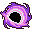
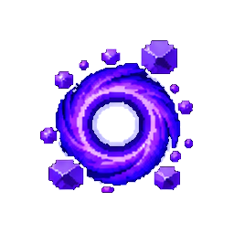

#23 · weapon_23MegabonkBlack HoleНаша иконкаVoidwellКолодец пустотыЭффект оригинала в MegabonkСтягивает врагов в гравитационную область, наносящую урон.ИсточникНаш PNG · 23Связь по ID · JSONОсновной — актуальный · weapons-current64 px32 px